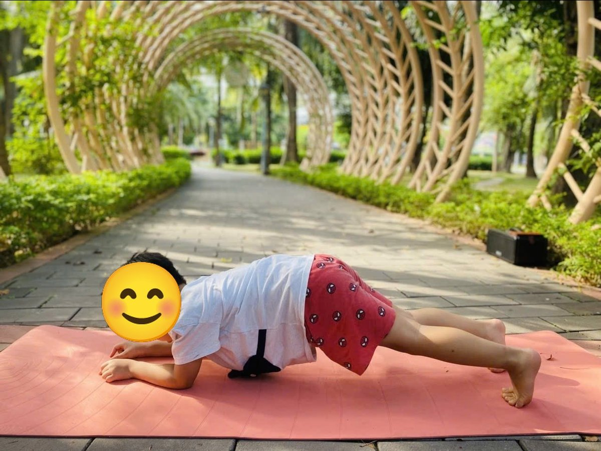

Chủ đề 21 · Cơ thể của bé
Bé Mi khám phá cơ thể
🌟 Bài học trong câu chuyện
Giới luật yoga: Saucha – Sạch sẽ, gọn gàng. Bé giữ thân thể, đồ dùng và nơi mình ở sạch đẹp.
Kỹ năng sống: Biết các bộ phận cơ thể, giữ vệ sinh thân thể.
1. Khởi động (2 phút)
Cả lớp ngồi xếp bằng thành vòng tròn. Cùng thở 3 hơi thở bông hoa: hít vào bằng mũi như ngửi hoa, thở ra bằng miệng thật chậm. Chắp tay trước ngực và chào nhau: “Namaste, chào các bạn!”
2. Câu chuyện: Bé Mi khám phá cơ thể (đọc cho bé nghe, 4 phút)
Cô đọc trọn câu chuyện cho bé nghe trước. Sau đó cô kể lại từng đoạn ngắn và cả lớp cùng tập 10 tư thế ở phần bên dưới.
Sáng nay bé Mi đứng trước gương và hỏi: "Mắt để làm gì? Tai để làm gì? Mũi để làm gì?". Mi chạy ra vườn hỏi các bạn thú.
Bác Cú Mèo xoay đầu nhìn quanh: "Mắt để nhìn. Rửa mặt sạch thì mắt mới sáng". Bạn Thỏ vểnh đôi tai dài: "Tai để nghe. Phải giữ tai sạch sẽ nhé". Bác Voi đung đưa chiếc vòi: "Mũi để ngửi. Khi sổ mũi, cháu xì vào khăn giấy". Chú Sư Tử thè cái lưỡi đỏ: "Lưỡi để nếm. Đánh răng sạch thì ăn mới ngon".
Mi nhìn đôi bàn tay: tay để cầm, để chạm, để ôm. Mi nhớ phải rửa tay bằng xà phòng trước khi ăn. Mi co đầu gối lên: đầu gối giúp Mi ngồi xuống, đứng lên, chạy nhảy. Bạn Mèo cong lưng, võng lưng thật dẻo, dặn Mi ngồi thẳng lưng khi ăn.
Mi đứng vững trên đôi chân, giơ đôi tay khỏe mạnh lên. Tối đến, Mi rửa chân sạch sẽ trước khi đi ngủ.
Mi nằm xuống giường, đặt tay lên ngực và nghe trái tim đập "thình thịch, thình thịch". Mi thì thầm: "Cảm ơn mắt, cảm ơn tai, cảm ơn tay chân. Mình sẽ giữ các bạn thật sạch mỗi ngày".
3. Kể lại và tập 10 tư thế (6 phút)
-
 1
1Đôi mắt cú mèo
🧘 Tư thế Ngồi xếp bằng (Easy Pose)
Lời kể khi tập: Bác Cú Mèo xoay đầu nhìn quanh: "Mắt để nhìn". Mi rửa mặt sạch để mắt sáng.
Cách làm: Ngồi xếp bằng, lưng thẳng, hai tay đặt nhẹ trên đầu gối. Giữ 3 đến 5 nhịp thở.
-
 2
2Đôi tai thỏ
🧘 Tư thế Con thỏ (Rabbit)
Lời kể khi tập: Thỏ vểnh tai: "Tai để nghe". Mi lau tai sạch sẽ.
Cách làm: Quỳ gối, cúi đầu chạm thảm, hai tay nắm gót chân, nhẹ nhàng nâng mông lên. Giữ 3 đến 5 nhịp thở.
-
 3
3Cái vòi voi
🧘 Tư thế Con voi (Elephant)
Lời kể khi tập: Voi đung đưa vòi: "Mũi để ngửi". Mi xì mũi vào khăn giấy.
Cách làm: Đứng gập người, hai tay buông xuống chạm sàn làm vòi voi, đung đưa nhẹ sang hai bên. Giữ 3 đến 5 nhịp thở.
-
 4
4Cái lưỡi sư tử
🧘 Tư thế Sư tử thở (Lion's Breath)
Lời kể khi tập: Sư tử thè lưỡi: "Lưỡi để nếm". Mi đánh răng sạch, thè lưỡi "Khàaa!"
Cách làm: Quỳ gối, hai tay chống xuống thảm trước gối (hoặc đặt trên gối), hít vào bằng mũi, rồi há miệng thè lưỡi thở ra "khàaa" như sư tử. Giữ 3 đến 5 nhịp thở.
-
 5
5Bàn tay chạm ngón chân
🧘 Tư thế Gập người ngồi (Seated Forward Fold)
Lời kể khi tập: Bàn tay để cầm, để chạm. Mi rửa tay bằng xà phòng trước khi ăn.
Cách làm: Ngồi duỗi thẳng hai chân, hít vào vươn tay lên, thở ra cúi người về trước, tay với về phía ngón chân. Giữ 3 đến 5 nhịp thở.
-
 6
6Đầu gối
🧘 Tư thế Ôm gối (Knees to Chest)
Lời kể khi tập: Đầu gối giúp Mi co chân, chạy nhảy. Mình ôm gối lắc lư.
Cách làm: Nằm ngửa, ôm hai gối vào ngực, lắc lư nhẹ sang hai bên. Giữ 3 đến 5 nhịp thở.
-
 7
7Cái lưng mèo
🧘 Tư thế Mèo bò (Cat-Cow)
Lời kể khi tập: Lưng mèo cong lên, võng xuống thật dẻo. Mi ngồi thẳng lưng khi ăn.
Cách làm: Chống tay và gối, hít vào võng lưng ngẩng đầu (bò "ò ò"), thở ra cong lưng cúi đầu (mèo "meo"). Giữ 3 đến 5 nhịp thở.
-
 8
8Đôi chân vững vàng
🧘 Tư thế Đứng thẳng (Mountain)
Lời kể khi tập: Đôi chân giúp Mi đứng vững. Mi rửa chân trước khi đi ngủ.
Cách làm: Đứng thẳng, hai bàn chân sát nhau, tay xuôi hai bên, vai thả lỏng, mắt nhìn thẳng. Giữ 3 đến 5 nhịp thở.
-

9Cánh tay khỏe
🧘 Tư thế Tấm ván (Plank)
Lời kể khi tập: Cánh tay khỏe để ôm mẹ thật chặt.
Cách làm: Chống hai tay (hoặc hai khuỷu tay) xuống thảm, duỗi thẳng hai chân ra sau, người thẳng như tấm ván. Bé nhỏ có thể hạ gối. Giữ 3 đến 5 nhịp thở.
-
 10
10Nghe tim đập
🧘 Tư thế Thư giãn (Savasana)
Lời kể khi tập: Mi nằm xuống, đặt tay lên ngực, nghe trái tim "thình thịch". Cảm ơn cơ thể của mình!
Cách làm: Nằm ngửa, tay chân thả lỏng, nhắm mắt, thở thật chậm. Giữ 3 đến 5 nhịp thở.
4. Thư giãn (2 phút)
Các con nằm ngửa, tay chân thả lỏng, nhắm mắt lại. Cô nói nhẹ: “Hít vào thật chậm… thở ra thật chậm… Con nhớ lại câu chuyện vừa rồi, nhớ người bạn mình thích nhất trong truyện. Cơ thể con mềm như bông, nhẹ như mây.” Sau đó các con nghiêng người, từ từ ngồi dậy.
5. Trò chuyện cùng bé (1 phút)
Bé Mi giữ cơ thể sạch sẽ mỗi ngày: rửa tay, đánh răng, rửa chân. Sạch sẽ là Saucha.
Cô hỏi các con:
- Con rửa tay khi nào?
- Mắt, tai, mũi để làm gì?
Kết thúc bằng lời chào “Namaste” và một nụ cười.
Lưu ý cho thầy cô và bố mẹ: Tập trên thảm, không tập ngay sau khi ăn no. Bé chỉ làm tới mức thấy dễ chịu, không ép bé. Tư thế đứng một chân có thể cho bé vịn tường hoặc vịn tay người lớn.